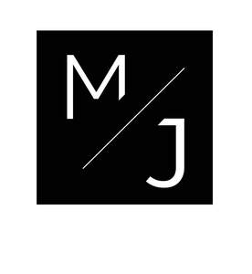

Trade Mark Journal No.2025/044 31 October 2025
UK00004281653 21 October 2025 (9,25,35,41,44)

- Class 9
- Endurance testing machines; Prerecorded fitness DVDs; Downloadable e-books; Downloadable videos; Downloadable software; Computer programs, downloadable; Electronic publications, downloadable; Downloadable computer graphics.
- Class 25
- Exercise wear; Gym shorts; Gym boots; Tennis wear; Sports wear; Gym suits; Leisure wear; Clothing for leisure wear; Shoes for casual wear; Ladies wear; Casual wear; Headgear for wear; Surf wear; Jogging outfits; Jogging pants; Clothes for sport; Clothes for sports; Jogging bottoms [clothing]; Jogging shoes; Yoga shoes; Jogging sets [clothing]; Padded shirts for athletic use; Padded pants for athletic use; Sports pants; Men's dress socks; Padded shorts for athletic use; Sports clothing [other than golf gloves]; Beach clothes; Yoga shirts; Athletic clothing; Athletic shoes; Jogging suits; Clothes; Yoga pants; Gymwear; Training shoes; Sport shoes; Sweat pants; Shorts [clothing]; Sports shoes; Athletic uniforms; Triathlon clothing; Sport shirts; Headbands [clothing]; Headbands for clothing; Jackets being sports clothing; Gloves [clothing]; Gloves as clothing; Sports clothing; Sports shirts; Moisture-wicking sports shirts.
- Class 35
- Advice relating to the business management of fitness clubs; Advice relating to the business operation of fitness clubs; Business management of wholesale and retail outlets; Retail store services in the field of clothing; Online retail store services in relation to clothing; Online retail store services relating to clothing; Unmanned retail store services relating to food; Unmanned retail store services relating to drink; Retail services in relation to footwear; Retail services in relation to beer; Retail services in relation to clothing; Online retail services relating to clothing; Retail services relating to clothing; Business management of wholesale outlets; Online retail store services relating to cosmetic and beauty products; Retail services in relation to clothing accessories; Retail services in relation to physical therapy equipment; Retail services in relation to educational supplies; Retail services in relation to non-alcoholic beverages; Retail services via catalogues related to non-alcoholic drinks; Retail services in relation to coffee; Retail services in relation to foodstuffs.
- Class 41
- Health and fitness training; Sports and fitness; Exercise and fitness classes; Health and fitness club services; Health club [fitness] services; Exercise [fitness] training services; Fitness and exercise training services; Fitness and exercise instruction; Health club services [health and fitness training]; Fitness club services; Physical fitness consultation; Physical fitness centres; Physical fitness instruction; Physical fitness training services; Sports and fitness services; Fitness training services; Tuition in physical fitness; Physical fitness tuition; Personal fitness training services; Personal trainer services [fitness training]; Providing fitness and exercise facilities; Physical fitness centre services; Exercise [fitness] advisory services; Conducting physical fitness conditioning classes; Physical fitness education services; Health and wellness training; Consultancy relating to physical fitness training; Aerial fitness instruction; Physical fitness centres (Operation of -); Health club services [exercise]; Training services relating to fitness; Conducting fitness classes; Physical fitness assessment services for training purposes; Education services relating to physical fitness; Provision of health club [physical exercise] facilities; Educational services relating to physical fitness; Provision of educational health and fitness information; Physical fitness instruction for adults and children; Conducting training sessions on physical fitness online; Aerobics training services; Training in yoga; Gym activity classes; Health club services; Aerobic and dance facilities; Sports training; Training in sports; Physical health education; Rental of sports or exercise equipment; Aerobics competitions; Providing health club and gymnasium services; Provision of educational services relating to fitness; Training related to nutrition; Exercise classes; Supervision of physical exercise; Gymnasium services relating to weight training; Providing of training in the field of health care and nutrition; Entertainment in the nature of weight lifting competitions; Physical training services; Strength and conditioning training; Personal coaching [training]; Life coaching (training); Training services relating to health and safety; Providing obstacle course training gym facilities; Training services relating to occupational health; Education and training in the field of occupational health and safety; Providing instruction and equipment in the field of physical exercise; Education and training services in the field of occupational health and safety; Sports club services; Training of sports players; Personal trainer services; Sports coaching.
- Class 44
- Fitness testing; Medical testing for fitness evaluation; Health spa services; Exercise facilities for health rehabilitation purposes (Provision of -); Personality testing [mental health services]; Mental health services; Mental health screening services; Health care relating to remedial exercise; Health counseling; Health care in the nature of health maintenance organizations; Beauty care services provided by a health spa; Health resort services [medical]; Nutrition counseling.
MJ WELLNESS & TRAINING LONDON LTD